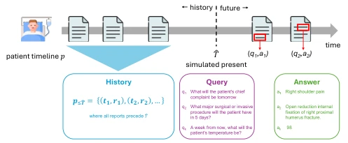
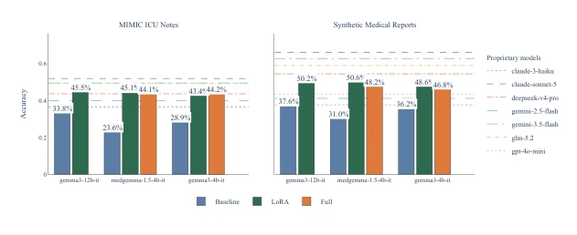

This paper attempts to employ LLMs as a "medical world model," which sounds appealing, but essentially still requires the model to guess future clinical events based on historical text. The authors propose the Future Querying paradigm, transforming prediction problems into natural language question-answering, attempting to bypass the limitations of traditional structured data. Although claiming to capture clinical dynamics, evaluation mainly relies on LLM-as-a-judge, which is "self-evaluation" to some extent, and future events themselves possess randomness, making 100% accuracy unrealistic. Although synthetic data solves the annotation problem, whether the generation quality truly reflects clinical complexity is debatable. However, small models after fine-tuning can match the performance of some large models, which is beneficial for privacy-sensitive medical scenarios, but the "world model" label is slightly overhyped, more akin to powerful pattern matching, and clinical safety is not fully verified, so actual deployment still requires doctor oversight.
Traditional clinical prediction models rely on task-specific pipelines and structured data, with poor scalability and difficulty utilizing unstructured text [18, 29]. Existing methods typically train independent models for specific endpoints (e.g., mortality, readmission), with high maintenance costs [5, 13]. Furthermore, a large amount of clinical information is hidden in unstructured reports, which traditional methods find difficult to extract effectively [25]. These models often rely on limited variable sets, potentially discarding important signals [30]. This paper aims to explore whether LLMs can serve as implicit medical world models, capturing the dynamics of patient state evolution by answering time-indexed queries, thereby avoiding manual feature engineering and task-specific retraining, achieving more generic patient trajectory modeling, providing more flexible prediction tools for clinical decision-making, while utilizing local fine-tuning to protect patient privacy.
The overall framework is based on the Future Querying paradigm, aiming to transform prediction into natural language question-answering. First, construct a dataset, using LLMs to parse patient timelines, generating (history, query, answer) triplets through predicate extraction and temporal segmentation. Queries contain time indices, e.g., "risk of complications in three days". Model training employs task-agnostic supervised fine-tuning, directly inputting raw clinical text, without feature engineering. The specific process includes: randomly sampling reports from patient history as future anchors, setting a virtual current time, using subsequent reports as answers, and generating natural language queries. The training objective is to maximize the conditional probability of the answer, using LoRA or full-parameter fine-tuning. This method allows a single model to answer diverse clinical questions without retraining for each task, and supports local deployment to protect privacy. The data construction algorithm includes three steps: predicate extraction, temporal segmentation, and history-query-answer generation, ensuring answers cannot be inferred solely from history, thereby verifying true future prediction capability.

Fig. 1: The future querying paradigm. A patient timeline p is partitioned by a virtual present ˆT into an observed history and a hidden future. Given the historical context and a flexible, time-indexed clinical query qk, we investigate whether an LLM can serve as an implicit medical world model to predict the correct answer ak derived from the patient’s actual future timeline.
Experiments were conducted on synthetic medical reports and MIMIC-IV ICU notes [16, 17]. Evaluation metrics use LLM-as-a-judge to judge semantic equivalence [1]. Baselines include open-source and proprietary LLMs. Results show that large proprietary models (e.g., Claude Sonnet 5) perform best, but fine-tuned small models (e.g., MedGemma) can significantly improve under LoRA, approaching large model performance. Interestingly, medical-specific models (BioMistral) perform worse than general models, possibly due to fine-tuning task mismatch. Accuracy is higher on synthetic data and lower on MIMIC, reflecting noise in real data. LoRA fine-tuning effects are significant, full-parameter fine-tuning improvements are limited, indicating parameter-efficient adaptation is sufficient to capture task signals. This proves the potential of small models on specific tasks, suitable for privacy-preserving deployment.

Fig. 4: Effect of fine-tuning on future querying accuracy with respect to the accuracy of proprietary models.